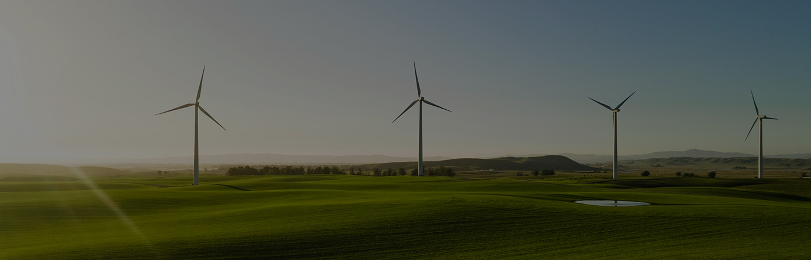
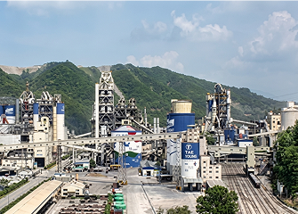
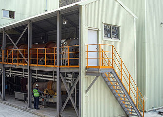
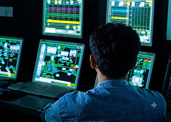
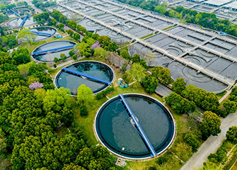
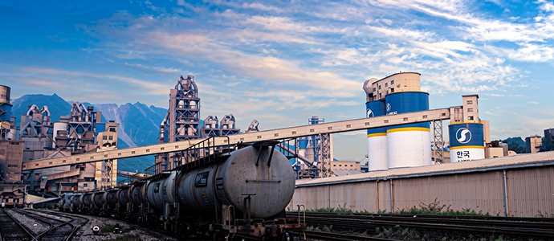
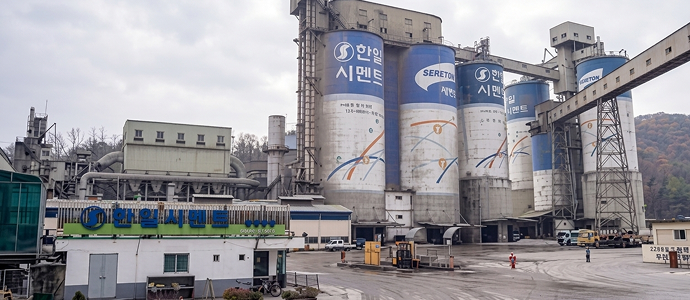

ESG경영
ESG경영
> ESG경영 > 환경 경영
Environmental Management환경 경영
먼지는 줄이고, 자원은 순환시키는 환경경영

미래와 환경,인간존중을 지향하는
Leading Company, 한일시멘트
- 선진 환경친화 경영체계 확립
- 자원 순환형 제조관리 시스템 지향
- 지역사회와 함께하는 환경공동체 확립
- 친환경적 채굴·개발
환경보전활동
한일시멘트는 환경을 최우선 경영방침으로 설정하고 맑은 공기를 보전하는 약속을 지켜가고 있습니다.
-

- 01. 대기환경관리
- 전기집진기를 최첨단 여과집진기로 교체,
소성 6기·냉각 5기 운용
-

- 02. 질소산화물 저감
- SNCR 설비로 배연탈질 처리, 저감설비
고도화 지속 검토
-

- 03. Clean SYS 운영
- 굴뚝자동측정시스템으로 실시간 측정,
환경부·환경공단에 전송
-

- 04. 수질환경관리
- 제조공정 특성상 폐수 배출이 없으며,
세차수는 정화 처리
6가크롬 관리 — 3년 연속 개선
기업자율기준 20mg/kg 대비 철저히 엄격하게 관리하며, 국립환경과학원이 매월 현장 검사로 검증합니다.
- 7.82023년
- 4.32024년
- 3.32025년
환경경영 미션 — 5대 키워드
- 시스템구축온실가스 모니터링
감축 옵션 개발 - 마인드변화기후변화 교육
에너지 절감실천 - 환경변화"녹색 한일" 구현
실시간 배출 감시 - 신재생에너지태양광발전 설치
바이오매스 연료 확대 - 에너지절감최적 공정관리
고효율 기자재
기후변화대응
에너지사용량과 온실가스 배출량을 총괄 관리하는 인벤토리를 구축해 국가 목표관리제도에 적극 대응하고 있습니다.
- 751만 2020
- 810만 2021
- 805만 2022
- 727만 2023
- 679만 2024
-

- 30%
폐열발전 전력 대체 - 단양·영월공장 소성공정 폐열로 발전, 연간 약 20만MWh 생산 — 약 92,000tCO₂ 절감
- 30%
-

- 220만톤
슬래그시멘트 생산능력 - 포항·광양 제철소와 연계, 연간 220만톤 규모 대체로 생산 과정의 온실가스 절감
- 220만톤